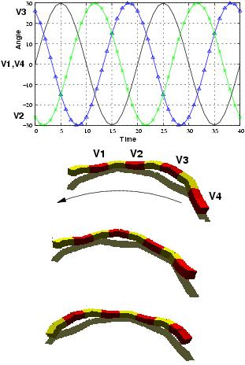

Next: 3 Rolling gait Up: 5 Locomotion capabilities Previous: 1 1D sinusoidal gait


Next: 3
Rolling gait Up: 5
Locomotion capabilities
Previous: 1
1D sinusoidal gait
The robot can move along an arc,
turning left or right. The values of the parameters are as same as
that in the 1D sinusoidal gait (Fig.
 ),
but now an offset in the horizontal joints is applied (Oh/=0).
Therefore, the horizontal joints are at fixed position all the time.
The robot has the shape of an arc. By changing Oh , the radix of
curvature of the trajectory can be modified.
),
but now an offset in the horizontal joints is applied (Oh/=0).
Therefore, the horizontal joints are at fixed position all the time.
The robot has the shape of an arc. By changing Oh , the radix of
curvature of the trajectory can be modified.
|
 |
|
Figure: Turning gait. The same coordination is applied than in the 1D sinusoidal gait. The offset of the horizontal joints determines the arc. |